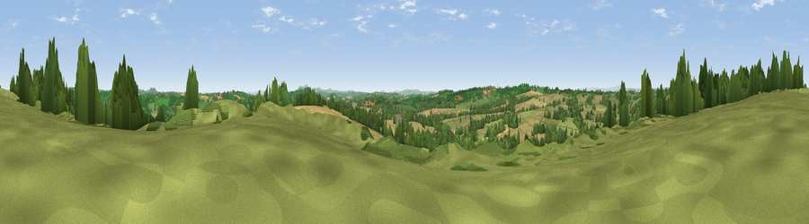

Viewpoint near Thornbury
#23667 in England · top 61% of its area beats it · near ThornburyWhere it is
The exact computed spot (SO 63025 59675). Click the marker for map links.
The view, rendered

A 360° render of this exact spot computed from the terrain model, tree cover and land cover — summer colours, afternoon light, calibrated against photographs of famous viewpoints. Real trees, hedges and buildings will differ in detail.
The panorama
Grey silhouette: terrain skyline in each direction (720 bearings, Earth curvature and refraction included). Dashed green: skyline with trees (+15 m) and buildings (+8 m) as obstacles. Blue strip: how far the ground is visible on each bearing.
Where the view opens
Wedge length = distance to the farthest visible ground on that bearing (vegetation-aware). Rings at 10, 25 and 50 km.
What fills the view
42% grassland · 37% cropland · 19% woodland ·
Angular shares of the visible panorama (visual magnitude), not map area. Landscape diversity 0.48 (0–1 Shannon).
Key numbers
More beautiful places nearby
The staircase of upgrades: each row has a higher view potential than everything closer. Driving times are estimates from straight-line distance, calibrated against real road routing — check an actual route before setting out.
| Place | Direction | Drive | Score |
|---|---|---|---|
| Viewpoint near Thornbury | SE · 0 km | ~1 min | 58.3 |
| Viewpoint near Thornbury | NW · 2 km | ~5 min | 66.0 |
| Viewpoint near Bockleton | NW · 3 km | ~8 min | 68.1 |
| Viewpoint near Upper Sapey | NNE · 5 km | ~11 min | 69.8 |
| Viewpoint near Bromyard | SE · 6 km | ~13 min | 72.6 |
| Viewpoint near Pencombe | SW · 7 km | ~15 min | 72.8 |
| Viewpoint near Martley | E · 11 km | ~22 min | 78.1 |
| Woodbury Hill | ENE · 13 km | ~23 min | 81.6 |
52.23402, -2.54283 · source: screening · position refined by local search. Computed location — check access rights before visiting.